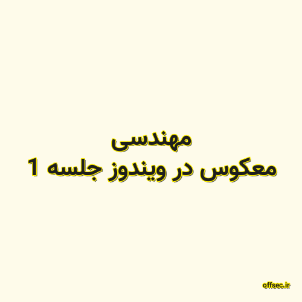

✖

مهندسی معکوس در ویندوز جلسه 1
آشنایی با زبان اسمبلی
آشنایی با اینستراکشن های اولیه
آشنایی با دیباگر
offsec.ir 2020-08-19 22:08:00 مطالعه پست گزارش خرابی لینک / محتوای مجرمانه / تغییر محتویات لینک